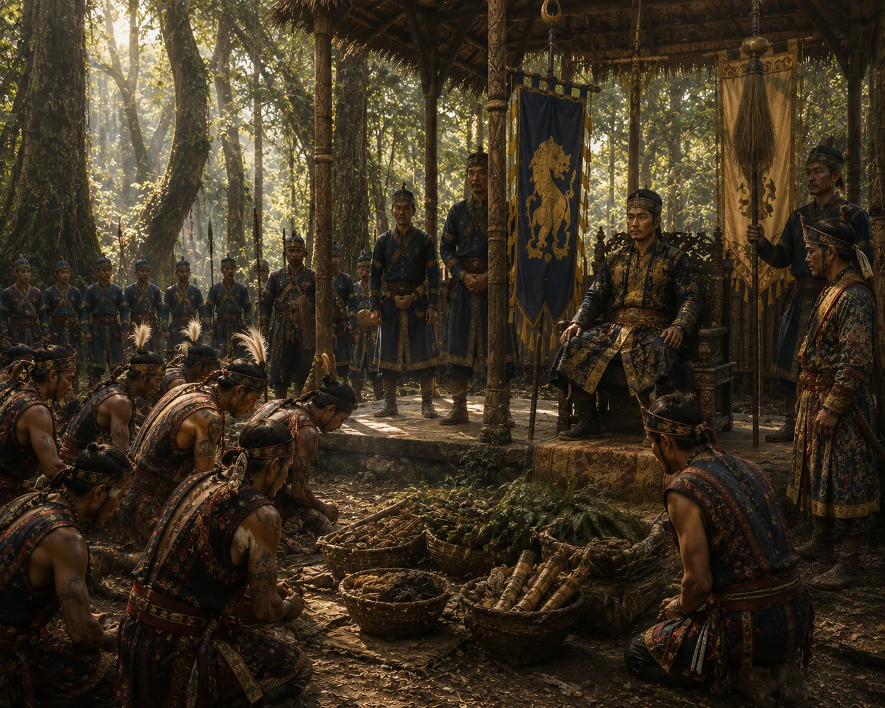

Naga Submission and Tribute Offering
c. 1279 · The coming of Sukaphaa

Defeated Naga chiefs travel to the royal court at Charaideo to kneel, submit oaths of loyalty, and pay tribute in salt, iron, and cloths.
Sources have not yet been catalogued for this record.
People: Suteuphaa